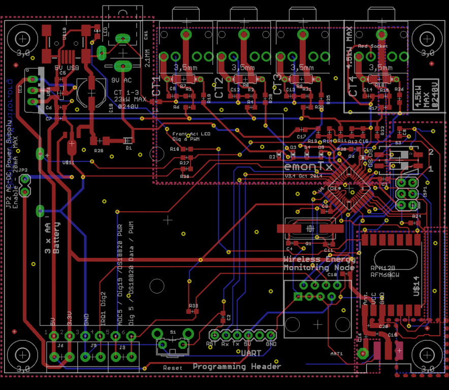
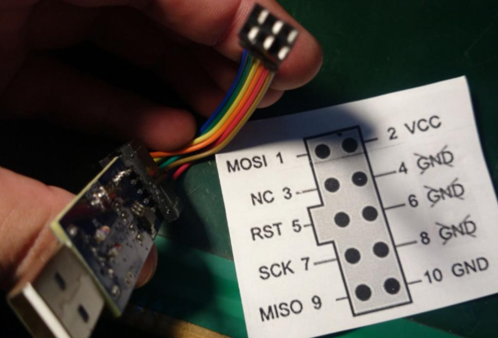
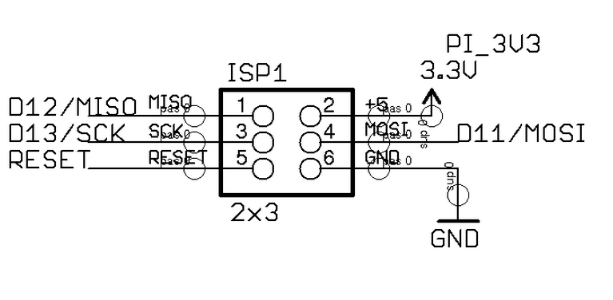

Im used to the arduino board programming scheme, I started making the emon 3.4 in order to evolve a little bit, im trying for the first time to program microcontrollers on pcb boards via programming pins ISP, For starters im trying to upload the bootloader, i know the ftdi driver is installed in my machine, the cable has been verified to work
However I have no idea of how to actually write the program and upload it to the microcontroller, I have been messing with the arduino IDE all day my FTDI cable its at COM10, however no programmer available at the arduino IDE seems to work with this cable, i have been looking and trying all day with no luck,
How can i write the code in c and upload it to the microcontroller using the FTDI cable? do i need a specific software to do this? Any special configuration or hack? what am I missing? , also, i understand that the UART pins are for the 328p while the ISP are for the RF module is this right? if yes what software can i use to successfully program both?
Re: Getting started with emon 3.4 programming (uC and RF module)
For starters im trying to upload the bootloader,
Did you build this thing from parts yourself, or buy it pre-built from the shop? If from the shop, I'm pretty sure it would have been shipped with an appropriate bootloader, so you shouldn't need to do that. But if you do, you need to use the ICSP header for that, which means you need an ISP programmer. The AVRISP MkII is quite affordable, or alternatively you can build your own ISP programmer out of a spare Arduino.
How can i write the code in c and upload it to the microcontroller using the FTDI cable?
Assuming the bootloader is installed, and you're now trying to upload a system image (aka "sketch") you should just be able to point your Arduino IDE at COM10 and click on 'Upload'... at least that's how I assume it works on Windows.. I use unix myself.
Re: Getting started with emon 3.4 programming (uC and RF module)
i see. i built it on my own using the bom posted in git, so my atmega is in blank, and so is my RF module, the only question i have left now is how cna i program the RF module and the onboard atmega from the same ISP header is it even possible?
or do i have to desolder one in order to program the other?
Re: Getting started with emon 3.4 programming (uC and RF module)
The SPI bus (mosi,miso and sclk) are used during normal running to communicate between the rfm module and avr, the rfm module is not used to "program" the rfm module per se as it is configured using commands from the AVR's sketch. The same bus is used to initially program the AVR via the 6pin (2x3) ISP header. Once the optiboot bootloader is installed (via the ISP) then future sketch uploads can be done via the serial port pins of the AVR using the 6pin (1x6) FTDI header.
The slave select pin is used by the AVR to select the RFM module in normal running and when installing the bootloader or any AVR programming via the ISP the attached programmer will use the AVR's reset pin.
The 6 conns at the ISP header should be vcc, gnd, mosi, miso, sclk and reset.
To program the AVR you must have those 6 connections, have you used a SMT or a DIL AVR? can it be removed and programmed off the board?
Paul
Re: Getting started with emon 3.4 programming (uC and RF module)
I'm guessing you don't need to flash the RF module with anything. I suspect it comes from the manufacturer good to go. But I've never seen one, so if anyone else knows better please chime in.
There should be no problem flashing a bootloader into your AVR via the ICSP header with an ISP while the RF module is physically on the bus, provided you have an external pull-up resistor on the RF module's /CS signal. See also http://openenergymonitor.org/emon/node/5345.
Re: Getting started with emon 3.4 programming (uC and RF module)
Im starting to read the references posted, but my impression is that the RF has to be programmed unless im mistaken and Im supposed to program the atmega with the node ID and frequency of the Tx module in order fot the module to be read by the Reciever
Re: Getting started with emon 3.4 programming (uC and RF module)
Check pb66's reply above. The RF module is configured at runtime by the sketch running on the AVR. That's done by commands over the SPI bus (like most SPI devices). If there is any firmware running on the RF module it's burnt in by the manufacturer, so it's ready to receive runtime SPI bus configuration commands from the AVR.
Re: Getting started with emon 3.4 programming (uC and RF module)
The node ID and frequency are amongst the many variables in the AVR's sketch that you upload as a whole, you do not "program" the node id and frequency nor do you flash the rfm module.
R24 (120R) is the pullup that dBC refers to, this must be fitted to program the AVR in place with a rfm69 fitted, if the rfm module hasn't been fitted yet or it's a rfm12 you could get away without it.
The focus to get your device working has to be to program the AVR, if you get a bootloader onto the AVR you can then upload future sketches via the ftdi header, the sketches content will configure the rfm module in normal running.
Paul
Re: Getting started with emon 3.4 programming (uC and RF module)
R24 (120R) is the pullup that dBC refers to
Man, that's strong for a pull-up. Do the lights dim when you talk to that thing?
Re: Getting started with emon 3.4 programming (uC and RF module)
Doh!!! R24 is not 120R but 120K
Well spotted I wasn't thinking much about the value, just (incorrectly) copied it over from the schematic to refer to it's component number, cheers dBC.
Paul
Re: Getting started with emon 3.4 programming (uC and RF module)
I see, thanks a lot for the answers, i currently own an USBASP 2.0 i Programmer I want to believe thats more than enough to get started programing the atmega328, i will get to it in the weekend, however I am still missing what software can help me get the bootloader on the chip? i have yet to find one as easy to use as the arduino IDE, im usually running windows, however i can get a Virtual machine running windows could anyone point me to a software to get the bootloader in to the microcontroler (windows preferred )?
New questions arise, why have both ISP and FTDI pins and not only the ISP? im guessing that if you can upload the bootloader using the ISP, then you can still keep using the ISP pins to upload sketches, so then why add the FTDI pins?
I bought from the open energy monitor store the RFM69Pi 433Mhz Raspberry Pi Base Station Receiver Board, on my own from ebay i bought 4 of the RF 433 Mhz modules myself, so i have a total of 5 modulesall at 433Mhz, according to what i just read here i can use one of the 4 i bought in ebay in the emon 3.4 along the Raspberri pi RF base station and start transmitting (Im guessing the Tx acts like a wire), as long as i have the emon 3.4 microcontroller programmed and running, im also assuming that the the emon base adapter that has a microcontroller along a RF module its already programmed to interact with the Pi is this right?
Im not quite sure in understood all the pull up resistor chitchat, my current R24 its 120k i went to the other thread that dBc posted, and looks like it had a problem with the reset times. before for the resistor being to low , but im guessing it should work in the current board
Re: Getting started with emon 3.4 programming (uC and RF module)
Can you confirm if you're building an exact emnTx v3.4 or something based on that design, it is really difficult to provide answers specific to your build without details.
The Arduino IDE is able to burn bootloaders, check the tools menu. Why isp and ftdi is a theory question best answered elsewhere but given both are available the ISP is the only way to install software UNTIL a bootloader is loaded, then the ftdi can be used which is generally easier to hook up to, provides serial communication and is also safer as you cannot get to the fuses (bootloader settings)
I have no experience of the "USBASP 2.0 i Programmer" but a very quick search seems to show it has a 5v supply voltage and 10pins, this will need an adapter to 6pin icsp to connect to the emonTx and unless it can power the emontx at 3.3v NOT 5V it will damage the RFM module if fitted, You can however program a bootloader with 5v prior to fitting the rfm module. (another good reason for us to use the ftdi once the rfm is fitted)
The rfm69pi's do normally come with firmware pre-installed, you should satisfy yourself this is the case before fitting the rfm module (for the same 3v/5v reason above) the rfm69pi doesn't have a ftdi header since it is connected to the Pi directly the programing and serial port comms etc are available via the Pi's gpio
The rfm69 and 12 modules can be interchanged with software edits (so the rfm69pi will be pre-loaded with rfm69 options) if you are in anyway unsure of how permanent fitment of any of the rfm modules is, then maybe look at options to lift the boards away from the main board using short legs or similar, you will have a hard time removing any well fitted rfm module.
If you are going to fit the rfm69 to any particular device the rfm69pi is probably favorite as it's usually the base station you want to be most sensitive.
Be careful about orientaion when fitting the rfm modules as the rfm69 "appears" upside down compared to the rfm12.
As long as you have the R24 (120K) pull-up that,s fine, ignore the chitchat.
Paul
Re: Getting started with emon 3.4 programming (uC and RF module)
Another option for burning the bootloader is 'avrdude' which runs on just about every platform known to mankind. Actually, the Arduino IDE uses avrdude to program the device (at least on Linux, but I assume on other platforms too), so you can use either really.
Many AVR based designs will have the ftdi USB<->serial IC right on them, with a corresponding USB port. If you do that, then the answer to the "why have ISP and ftdi" becomes more obvious. The ISP gets used at production time to burn the fuses and bootloader (and possibly the initial system image) then you send your product out to thousands of customers. Should you want to do an in-field update of the system image all you need to do is send people a hex file and some instructions on how to run avrdudue. Just about everyone has access to a laptop and a USB cable. Assuming you've exposed your USB port there's no need for them to pull anything apart to get at any header pins.
When the ftdi IC and USB port are removed from the design (typically for cost or space saving) then in-field f/w updates are harder. They need to get at the serial pins (aka FTDI header) or the ICSP pins and have more specialised hardware (an FTDI cable, or an ISP), so the relative advantage of an FTDI header Vs an ICSP header is smaller.
Re: Getting started with emon 3.4 programming (uC and RF module)
Thanks for the theory master class dBC :-) insightful as usual.
My "Why isp and ftdi is a theory question best answered elsewhere" comment was actually an attempt to sidestep adding any confusion surrounding the USB to this thread, since the emonTx's have usb for power only. And to focus on the main reasons why Gzero should use an FTDI and aside from being easier to access (on a emontx) most ICSP's use 5v and the RFM's are not 5v tolerant so unwittingly connecting a 5v ICSP after the RFM is fitted could be fatal (for the module not the user that is!!), plus the using the FTDI also prevents accidental fuse arrangements being set by uploading the wrong hex file and gives serial output which are all more relevant to Gzero but not necessarily any of the founding reasons behind the manufacturers design.
The arduino IDE does indeed use avrdude on the windows platform, but the "i have yet to find one as easy to use as the arduino IDE," comment seemed to infer a preference for simple and familiar.
Paul
Re: Getting started with emon 3.4 programming (uC and RF module)
yes sure this is the pcb layout i sent to the fabhouse I downloaded the files from the OpenEnergy Monitor GitHub https://github.com/openenergymonitor/Hardware/tree/master/emonTxV3/emonTx_V3.4

I made my own adapter for this 10 pin programmer (4 of them are just GNDs) right before i started this thread, (i glued the pins) in order for it to become a 6 pin adapter for this board,

So in short I need to make sure that in order to not kill the RF module I would need to program the microcontroller and THEN solder the RF module, this way it wont get in the way and will be feed by the 3.3v regulator after the system is complete,
Im looking at the schematic right now and it seems that no matter if i use a 5v source, it will get regulated down by the 1702 Voltage regulator (down to 3.3v) unless im reading it wrong ,
Re: Getting started with emon 3.4 programming (uC and RF module)
Good, I was assuming a close copy of the emontx v3.4 but just wanted confirmation to be sure we were on the same page.
Yes in normal operation the 5v from the USB power supply, FTDI, 9VAC or batteries all get regulated at 3.3v BUT the "5v" pin of the ICSP is connected to the 3.3v rail directly so MUST be powered with 3.3v if the RFM is fitted, so yes program before fitting rfm OR supply 3.3v to the ICSP header not 5v (either from your programmer if it can do 3.3v) or via a voltage divider or even by not connecting the 5v to the ICSP but to the FTDI to utilize the on-board regulator. Before the rfm is fitted it doesn't matter because the AVR can handle either voltage.

This is an excerpt from the emontx v3.4 schematic
Paul
Re: Getting started with emon 3.4 programming (uC and RF module)
I think there may be some confusion about the purpose of pin 2 on the ICSP header. It's there to allow the programmer to determine what system voltage your target is running at so that it can use that same voltage when driving the SPI pins. You should power your target via its normal power supply when programming.
because the AVR can handle either voltage.
But it can't handle a Vcc of 3.3V and SPI voltages at 5V, which is why the programmer needs to determine what voltage your system is running at before it does anything else.
My description here applies to the official Atmel AVRISP MarkII: http://www.atmel.com/webdoc/avrispmkii/avrispmkii.intro_connecting.html
I've no knowledge of what other programmers do, but if they jam 5V down pin2 that sounds very dangerous (for all the reasons pb66 has highlighted above). Generally you want to program these things after the board has come back from manufacturing and by then the programmer should be making no assumptions about what voltages are safe and what other devices are sitting on those rails and busses.
Re: Getting started with emon 3.4 programming (uC and RF module)
I wasn't aware ISCP programmers didn't provide power, An accumulation of facts such as the "+5" label on pin2 of the ISCP that is shown as tied to 3.3v, the "Note: the RFM12Pi is a 3.3V only therefore it should not be powered by a 5V ISP programmer." comment in the wiki led me to believe the ICSP did (or at least could) power the board especially as I understood the bootloader is installed during manufacture.
Since I have only ever used Arduino as AVR ISP or the RPi GPIO for this purpose I've always provided the correct voltages via the ICSP header including power.
@Gzero - in light of the above it's either safer to stick with programing before fitting the rfm or you will need to check your own programmer, a short search reveals some programmers only work at 5v, some provide power and some require power!
@dBC - this seems like another very good reason to stick to using the FTDI and leaving the ICSP well alone!
To coin a phrase of Robert's "that's the nice thing about standards, there are so many to choose from!"
Paul
Re: Getting started with emon 3.4 programming (uC and RF module)
AVR910 (http://www.atmel.com/images/doc0943.pdf) permits both, but Atmel's own programmer takes the safe option of insisting the target be self-powered, and then sensing that voltage to drive the SPI pins at the correct voltage.